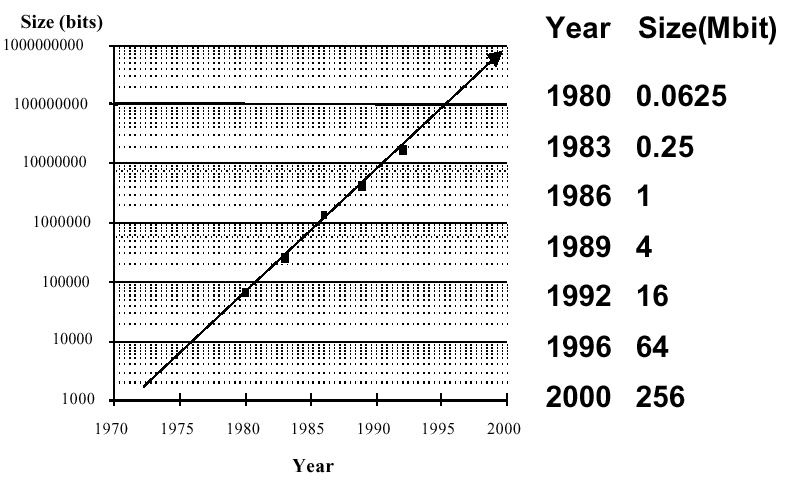
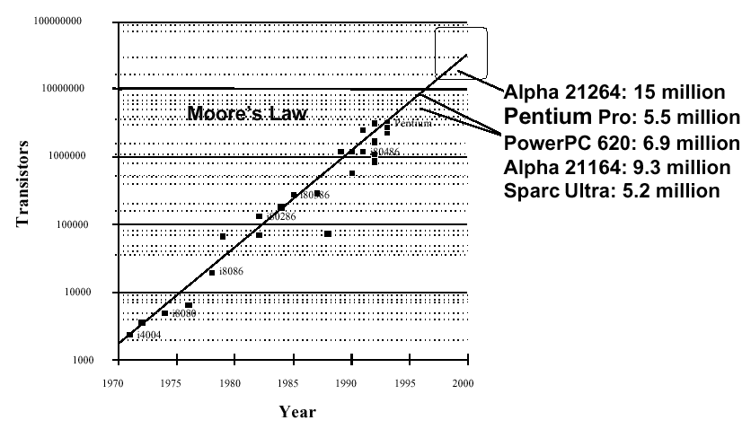
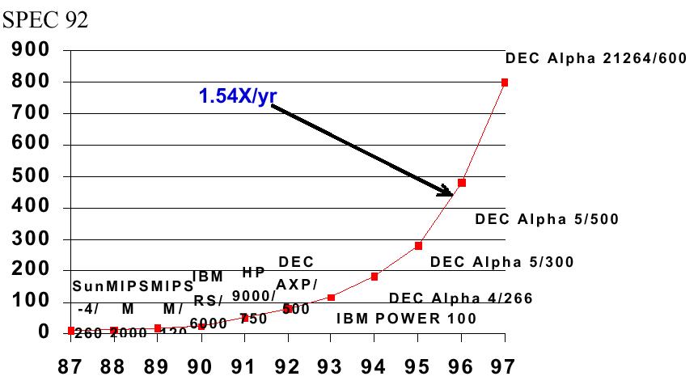
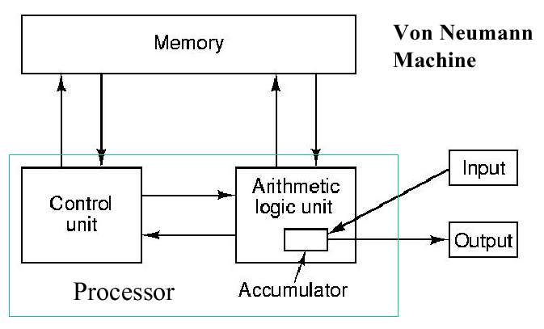
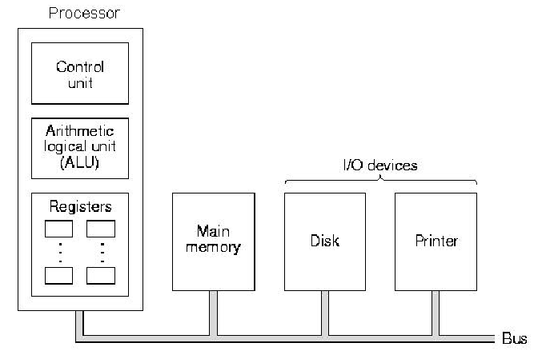
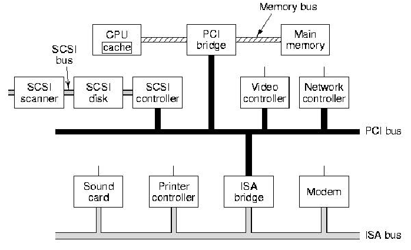
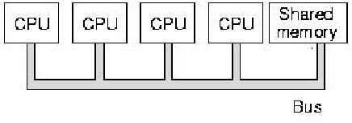
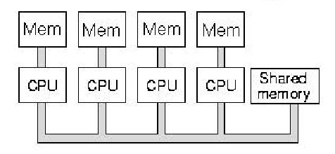

In Section 1.1, we briefly summarized how technology developed from vacuum tube circuits to modern VLSI techniques. The ability to place more logic gates per unit area has been the primary motivation for exponentially increasing memory and processor capacity and performance. This development has followed several important trends, which we discuss in this section, as follows.
Memory capacity has approximately doubled every 1.5 years since the early 1970s. Prior to that, memory was not implemented in integrated circuits, but consisted of arrays of tiny magnetic cores strung together on a lattice of fine wires. Thus, the origin of the term core to describe a computer's main memory. Figure 1.5 illustrates the memory capacity trend, showing how memory gate density has increased from 1 mbegabit (Mbit) per chip in 1986 to 256 Mbit per chip in 2000. By 2004, this is expected to reach 1 Gbit per chip.

Figure 1.5. Exponential increase in memory capacity as
a function of time since the early 1970s,
adapted from [Maf01].
The increase in memory capacity and processor performance (Section 1.3.3) has made it possible to migrate supercomputer applications such as sophisticated image enhancement, finite-element modelling, and weather prediction to desktop computers. However, this rate of increase is probably not sustainable on an indefinite basis, as discussed in Section 1.3.4.
The number of transistors per chip has approximately doubled every 1.5 years since the early 1970s, when integrated circuits became available. This effect is called Moore's Law. Figure 1.6 illustrates this trend, showing how chip size has increased from fewer than 2,000 transistors in 1970 to over 15 million transistors in 2000. By 2003, this is expected to reach 60 million transistors per chip.

Figure 1.6. Exponential increase in processor capacity as
a function of time since the early 1970s (Moore's Law), adapted from [Maf01].
The increase in processor capacity has made it possible to increase the speed of processor circuitry, particularly for arithmetic logic operations. For example, the chip area (also called real estate) required by an N-digit multiplier circuit varies approximately as N2. Thus, if the processor area doubles every 1.5 years, then the speed increase of a multiplier possible with such technology could increase by a factor of 21/2 = 1.414 times every 1.5 years. We see this reflected in the performance increases shown in the following section.
In order to measure processor performance, we use the units of SPEC benchmarks. The System Performance Evaluation Cooperative (SPEC) benchmark suite was created in 1989 to rpovide a consistent set of realistic benchmarks for evaluating CPU performance. The SPEC95 set of benchmarks includes games, a hardware simulator, file compression and decompression, applications such as quantum physics simulations, fluid dynamics problem solutions, and so forth. In Figure 1.7, we show the increase in processor performance as a function of the SPEC92 benchmark suite, which is listed in Gee et al.'s analysis of cache performance. (Cache is a type of fast memory that we will discuss later in this course.)

Figure 1.7. Exponential increase in processor performance as
a function of time since the early 1970s, adapted from [Maf01].
The increase in processor performance has made it possible to port real-world applications to the PC platforms (e.g., Pentium and Apple G4 PC architectures). In the preceding section, we said that a multiplier's speed could increase 1.414 times every 1.5 years. So why does the curve in Figure 1.7 show an increase in processor capacity of 1.54 times per year? Consider that, although the previously-mentioned N-digit multiplier requires area proportional to N2, there exist many operations that only need area proportional to N. The mix of these applications and the operations that they use is highly dependent on the applications being run on the computer. Hence, the use of a benchmark suite such as SPEC92 or SPEC95 (discussed in the textbook), to provide a consistent mix of operations across all platforms and test scenarios.
In the preceding presentation of hardware technology trends, there is danger in assuming that these trends will continue forever. In fact, there are physical limits to computer chip size and speed, which we will discuss briefly in this section.
Currently, computer chips are made by a process called lithography, in which the chip design is laid out with the aid of a computer, then printed onto a master template having multiple layers. This template is called a lithograph, after the printing process of that name. Masks are made from the lithograph master and are used to allow (or mask) the penetration of high-energy radiation into the semiconductor materials that comprise the chip. This irradiation process supports chemical removal of materials that comprise the partially completed semiconductor circuit, which is called etching.
Present lithography processes support 0.18 micron resolution (size of the smallest feature that can be produced on the chip). Making these dimensions smaller, to pack more transistors on the chip, requires the lithography process to use wavelengths of electromagnetic energy that are much smaller than visible light. Thus, it is foreseen that litho processes will progress through the ultraviolet range, down into X-ray and gamma-ray lithography, as technology is developed.
However, the limiting constraint is not how small we can make features on a circuit board. Rather, the hard limit involved in using computer circuits that we have today is dictated by the size of an atom. For example, when the thickness of an insulating strip between two conductors on a circuit board becomes less than approximately 1.2 atomic diameters, then there is significant interference or cross-talk between conductors or channels in an information-carrying structure called a bus. Given today's resolution of 0.18 microns, and the limiting atomic dimension of approximately 1nm (0.001), we only have approximately a factor of 200, or less than 2.5 orders of magnitude increase in resolution left in the current technology. That translates to a capacity increase of approximately 2502 = 62,500, which is not a comforting margin of safety. If Moore's Law continues to hold, then we the number of capacity-doubling periods is given by
Np = log2(62,500) < 16 ,
which translates to less than 16(1.5) = 24 years left in the technology cycle. Dr. Moore's current estimate is that we will run out of capacity in 2017, others say as late as 2025. What is certain is, that within your professional lifetime as computer scientists, there will be a radical shift from current circuit technology to something different - a technology that will support much faster, more highly parallel computing. Perhaps quantum computing will emerge as the dominant technology. Others say that biological computers based on DNA or protein technology will come to the rescue. IBM has recently announced the possibility of building circuits from carbon nanotubes, which presently have a width of approximately 10 atomic diameters. Whatever will happen, the paradigm shift will have profound technological and economic effects on the computer industry.
There is an interesting article about future technology trends at CNN's Web site that discusses Extreme Ultraviolet Photolithography for chip making - a useful summary of things that might occur.
If you want to read more about physical limits on computing, visit Dr. Frank's Web page about physical limits on computation. He has taught a course in this area, and the references listed therein make for interesting reading.
We next present overview of the types of computer architectures that have been developed with the technologies that have evolved since the dawn of useable computers during WWII.
There are three principal ways to connect components in a computer, called the von Neumann, bus, and multiprocessor architectures. We summarize each of these, as follows.
1.3.5.1. von Neumann Architecture. John von Neumann elucidated the first practical stored-program computer architecture (scheme for connecting computer components) in the mid-1940s. It is comprised of the five classical components (input, output, processor, memory, and datapath). The processor is divided into an arithmetic logic unit (ALU) and control unit, a method of organization that persists to the present. Within the processor, the ALU datapath mediates data transfer for computation. The registers are fast memory modules from/to which data can be read/written to support streaming computation, as shown in Figure 1.8. Within the ALU, an accumulator supports efficient addition or incrementation of values corresponding to variables such as loop indices.

Figure 1.8. Schematic diagram of von Neumann architecture,
adapted from [Maf01].
The von Neumann architecture has a significant disadvantage - its speed is dependent on the bandiwdht or throughput of the datapath between the processor and memory. This is called the von Neumann bottleneck.
1.3.5.2. Bus Architecture. There are many animals (e.g., cat or dog) whose internal organs are hung from a backbone that conveniently happens to be horizontal. Bus-based computers are structured like that - processors and memory are connected to a backbone bus that acts as a "superhighway" for data or instructions to move between processors and memory. In practice, the bus architecture has the same components as the von Neumann architecture, but they are arranged along a bus, as shown in Figure 1.9.

Figure 1.9. Schematic diagram of a bus architecture,
adapted from [Maf01].
In principle, the bus computer solves the von Neumann bottleneck problem by using a fast bus. In practice, the bus is rarely fast enough to support I/O for the common case (90 percent of practical applications), and bus throughput can be significantly reduced under large amounts of data. Figure 1.10 shows the layout of components in a modern PC, which is a useful example of a bus architecture.

Figure 1.10. Schematic diagram of PC bus architecture,
adapted from [Maf01].
In Figure 1.10, note that there are multiple buses - the PCI bus mediates large-scale data transfer between external components, as does the ISA bus. The SCSI bus is used to daisy chain peripherals such as disk drives, scanner, etc. The von Neumann bottleneck is partially overcome in practice by using a very fast bus, called the memory bus, to connect the CPU, memory, and the PCI bus.
Unfortunately, there are physical limits on how many components can be packed in a given space in a von Neumann machine (or any other computer, for that matter). Bus bandwidth limits the sequential computation model inherent in the von Neumann architecture to speeds that are not feasible for compute-intensive scientific applications. As a result, multiprocessor architectures were developed to address such problems, as discussed in the following section.
1.3.5.3. Multiprocessor or Parallel Architecture. Recall the old saying, "Many hands make less work." In computers, the use of many processors together reduces the amount of time required to perform the work of solving a given problem. Due to I/O and routing overhead, this efficiency is sublinear in the number of processors. That is, if W(N) [or T(N)] denotes the work [or time to perform the work] associated with N processors, then the following relationships hold in practice:
W(N) < N · W(1)
and
T(N) > T(1)/N .
The first equation means that the work performed by N processors working on a task, where each processor performs work W(1) [the work of one processor in a sequential computation paradigm], will be slightly less than N times W(1). Note that we use "<" instead of "=" because of the overhead required to (1) divide up the problem, (2) assign the parts of the problem to N processors, (3) collect the partial results from the N processors, and (4) combine the partial results to achieve a whole, coherent result.
The second equation means essentially the same thing as the first equation, but the work is replaced by time. Here, we are saying that if one processor takes time T(1) to solve a problem, then that same problem solved on an N-processor architecture will take time slightly greater than T(1)/N, assuming all the processors work together at the same time. As in the preceding paragraph, this discrepancy is due to the previously-described overhead.

Figure 1.11. Schematic diagram of multiprocessor architecture, where
each CPU shares a memory module that is connected to a common bus -
adapted from [Maf01].
Figure 1.11 illustrates schematically a simple multiprocessor architecture with four CPUs, which share a memory module that is connected to the CPUs via a common bus. This is a simple architecture that is useful for solving selected types of compute-intensive problems. However, if you try to solve data-intensive problems on such an architecture, you encounter the von Neumann bottleneck trying to read and write the large amount of data from and to the shared memory.

Figure 1.12. Schematic diagram of multiprocessor architecture with
shared memory, where each CPU also has its own fast, local memory -
adapted from [Maf01].
To help solve the problem of bus contention inherent in shared-memory multiprocessors, computer scientists developed the mixed model of parallel processing, in which the CPUs have small, very fast local memories that communicate with the CPU via a very fast, short bus. Because the bus is short, there are fewer impedance problems and the bus bandwidth can be increased. This migrates the von Neumann bottleneck closer to the CPU, and alleviates some of the demands on shared memory. Local memory architectures are useful for problems that have data locality, where (1) each CPU can solve part of a problem with part of the problem's data, and (2) there is little need for data interchange between processors.
A special type of multiprocessor is called a distributed processor, in which the individual CPUs (called compute servers) are connected to storage servers by a network. You can make the multiprocessor diagrammed schematically in Figure 1.12 into a distributed computer by replacing with a network the bus that connects the CPUs to each other and to the shared memory.
Having taken a high-level tour through computer technology trends, we next examine the low-level technology that makes these machines work, namely, digital logic.